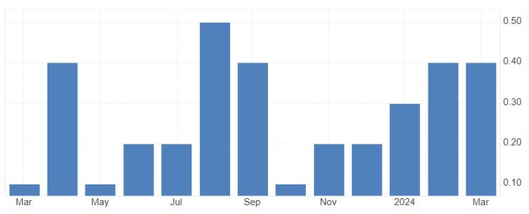
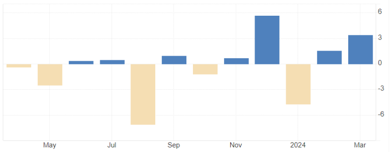
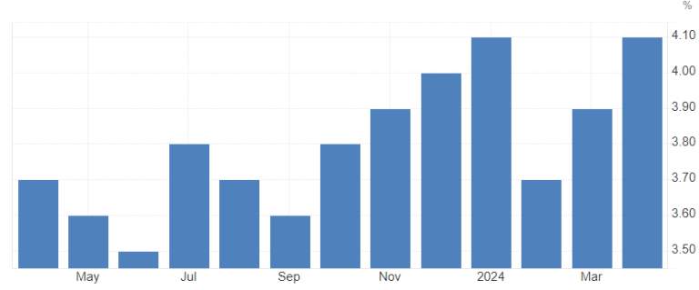

Weekly market outlook for 13.05.24 – 17.05.24
Macro Data
How do you feel on a regular Monday? Sleepy? Tired? Me too…
This time around, the calendar feels the same way, and we don’t have any meaningful macro data releases today, besides speeches from Fed members Jefferson and Mester later during the US session.
Tuesday is going to be a notch more fun. We get UK quarterly employment data in the morning, German and EU ZEW sentiment data, as well as the Australian budget release, followed by US PPI at the regular 08:30 EST release time.
PPI could have some minor impact already, as it’s an early-pipeline inflation report. Looking at the past data, we see some steadying of the MoM data in a relatively broad spectrum for the last year, but nothing that suggests any meaningful trajectory in any direction.
US headline PPI MoM
YoY data is coming up a touch from relatively low levels around 1% to more sustainable levels around 2% right now.
US headling PPI YoY
Core PPI, excluding food, energy, and trade, has been ultra-stable for quite some time already, and I’m not expecting anything else out of this week’s report.
US core PPI MoM
If there is any surprise in the report, regardless of the direction, and it’s not too significant, I would just fade whatever reaction we get to it, if I’m fully honest. This report has its implications in the market, but one report deviating from consensus is likely to be seen as an outlier that won’t change the overall picture. So, trade accordingly!
Wednesday is then the big day to look forward to! EU prelim GDP for Q1 is on the docket in the morning, followed by the big event in the US session.
CPI and retail sales, along with the NY manufacturing index, are all released at the 08:30 EST schedule. Obviously, CPI is the one to look at there, with retail sales playing a minor role as well.
Looking at the past data floating in, we saw a little rise in headline MoM inflation from 0.1% in October 23 to 0.4% in February and March 24, with core MoM CPI rising constantly since June 23 as well.

US headline CPI MoM
US core CPI MoM
YoY headline readings look like they are flatlining now between 3.0% and 3.5%, while the core readings look to come down steadily, even though slowing down on the path down, coming in at 3.8% now for the last two reports.
US headline CPI YoY
US core CPI YoY
The re-acceleration in the headline MoM readings in the last couple of months, really kicking off with 2024, is somewhat of a shocker and surprise for the market so far.
There is a lot of fear that we are going to experience stagflation going forward, meaning high inflation coupled with low growth and higher unemployment.
I don’t think this fear is particularly worrisome, as I already wrote in last week’s reports. There is underlying weakness in the CPI readings, with volatile aspects of it accounting for most of the rise in the last couple of months, and more sticky parts being steady at low increases or coming down still. There were also some unfortunate roundings in the last couple of readings, for example, 0.25% = 0.3% MoM, whereas a mere 0.1% lower reading at 0.24% would mean we get a 0.2% headline report.
At the same time, it doesn’t make sense that If spending is going down as much to see a contraction in the economy, prices would still keep up. It is way more likely that prices would be slashed as well, as the market is efficient enough these days to figure it out.
This is also why I think this week’s CPI report could fall below expectations of 0.3% MoM on the headline, and maybe right AT forecast of 0.3% MoM on the core. Do I personally care about the YoY reading? No. We simply need to look at the latest change in direction on the inflation path to see where we could be heading. YoY is just not good enough for that at the moment.
In any case, this month’s inflation report feels like a big one in terms of setting sentiment for the next couple of weeks or even months.
On a hot report, the fear of re-acceleration could become more evident, and inflation expectations could start to de-anchor away from the current 3% short-term and 2% long-term. In that case, we could see some bigger implications in the bond market, thus affecting other assets too.
If the report comes in softer than expectations, risk sentiment is likely to improve, with bonds possibly gaining strong support and the commodity market staying supported by lower yields as well. It would certainly pave the way for a lot more rate cuts from the Fed getting priced into the short term.
If the report aligns right on expectations at 0.3% MoM, I think we are in for some seriously tricky price action. Market participants will then closely examine all the details in the report and come up with a narrative that fits. However, we may also see both extremes, with one side saying “annualized 3-4% is not worrisome; it is around the historical average of inflation,” and the other side saying “this is still above the Fed target of 2% annually and just means higher for longer.”
What I’m pretty sure about is that it would need an insanely hot report, like 0.5% MoM for both headline and core, to raise questions about further hikes.
The other “big” release to look at is the US retail sales report for April, coming out at the same time as the CPI report.
Looking at the past couple of months, we saw one big outlier in December 23; otherwise, we have had somewhat steady headline readings around 0.7% MoM, which is still very healthy.
Year over year, it looks like we are heading to way above 4%, again very healthy readings for any economy.
US headline retail sales MoM
US headline retail sales YoY
Even looking at the core index, excluding gas and autos, it gives a very strong impression from a spending perspective in the US.
US core retail sales, ex Autos & Gas
I certainly think that this report has its implications as well, same as the PPI report, but it is going to be overshadowed by the CPI release.
Thursday, May 16th. We are going to receive Japanese prelim Q1 GDP and Australian employment data for April in the early asian session. The latter is definitely going to move the AUD, at least for a spike and possible fade (barring any big surprises), whereas the GDP release is likely not going to have any lasting impact at all.
later in the US session that day, we get the US housing data for April and that is something I’m really looking forward to!
Why? because I spoke with a lot of people working in the housing sector the last couple of weeks, and they ALL talk the same talk: crashing prices in April!
We are waiting for quite some time already that US housing is finally giving in to the high rate environment, but we did not get any of that; instead we got data that looked like re-acceleration in the sector.
US housing price index MoM
US existing home sales prices MoM
CS home price index MoM
if we look a bit under-the-hood, we can see that there is weakness in the housing market already for some time though:
US existing home sales MoM
US new home sales MoM
US housing starts MoM
US building permits MoM

US pending home sales MoM
All of the above does not look like an acceleration but more like a slowdown in the current market, despite being volatile in both directions. What caught my attention is this chart:

AUD unemployment rate

AUD employment change MoM
Expecting bigger reactions on the AUD on that one!
Next notable on the list – weekly jobless claims and US PPI both dropping at 8:30 am EST.
I’m not going to focus too much on the weekly claims, as usual.
PPI: Consensus is for 0.1% MoM (0.2% whisper) compared to 0.5% in April, with a YoY reading consensus for May at 2.5% (2.2% whisper) compared to the 2.2% we got in the last data release.
US total housing inventory
From what I’ve heard in Florida, Texas, California, Seattle, New York, as well as Minnesota, is that inventory is coming up now quite a bit, listings are way longer, and sellers simply cannot hold onto their assets for that long anymore, so they cut down on their pricings in order to be able to just get rid of what they don’t need/don’t want/cannot afford anymore.
We see the same already in Europe, with prices in most regions down some 10-20% already in the last couple of months, only some “wanted” and influx locations/regions seeing prices holding up where they have been.
If the same is going to be true for most of the US, we could see a lot of spillover into other sectors from that. The hope right now is that long-term mortgages are falling below 7% for real now and maybe getting closer to 5% again to curb up spending in housing.
US 30y mortgage rates
US construction spending
As usual, Thursday as well we have weekly jobless claims on the docket. We also get Philly manufacturing data, but I doubt those are the big movers anywhere. As usual, claims do have their place but are not NFP caliber movers.
The only notable macro data we get on Friday is China retail sales and industrial production in the Asian session, followed by harmonized CPI for Europe at the 04:00 EST schedule. After that, it’s super quiet to end a relatively quiet overall week.
Price outlook:
As for the FX space, I’m expecting relatively stable movements leading up to the CPI release. There might be some pre-event jitters, potentially leading to further bond weakness and subsequent USD strength. However, I doubt this will spill over into risk sentiment, so equities and commodities should continue as usual.
Minor movement is expected on GBP on Tuesday due to the employment data. I anticipate some weakness in the data, which could translate to a decline in the pound. Keep an eye out for sustained breaks below 1.25 on cable, as well as movement towards and beyond the 0.865 level on EurGbp.
I’ve already mentioned that I don’t expect US PPI to have a long-lasting impact on prices, but it usually presents an intraday opportunity for quick profits by fading the initial reaction. Keep an eye on that!
Regarding the big event, the CPI release on Wednesday, I anticipate some undershooting of the consensus, as I mentioned before. If this holds true, we could see bonds rallying, especially the long end of the curve. This would be welcomed by risk sentiment, likely resulting in new ATHs on all indexes, as suggested in last week’s outlook.
TLT longs would be favorable in this scenario, along with USDJPY shorts and long positions in NQ and Gold to cover all asset classes. Note: USDJPY shorts are only recommended for the short-term reaction.
If we don’t get a soft CPI reading but a hot one, we would see the opposite effect:
Selling pressure in bonds, especially the long end
USD buying across the board
A hit to risk sentiment, resulting in selling in equities and commodities
Rate cuts being priced out further, especially in 2025
I believe the latter option of a hot CPI report is interesting, as it could change long-term inflation expectations and have lasting effects on all markets.
It’s difficult to predict price levels before the CPI numbers are released, as the report could cause significant movements in both directions. Therefore, I’m refraining from making bold predictions and instead preparing myself for any outcome.
Regarding the housing data on Thursday, I’ve been hearing negative reports about the sector for some time now, and it may be time for the market to react accordingly. I expect risk sentiment to take a hit, bonds to receive a boost, and the USD to weaken slightly. While I don’t anticipate significant moves, it could provide opportunities for long-term trades to materialize, particularly TLT longs.
Overall, this week revolves around the CPI release, and I’ll likely follow up with a post-CPI analysis. Best of luck this week!
Dom
.png)
.png)
.png)